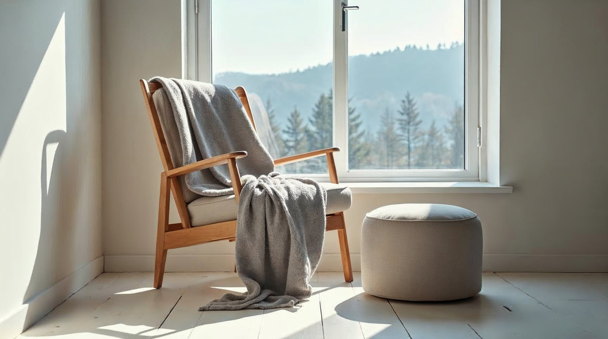
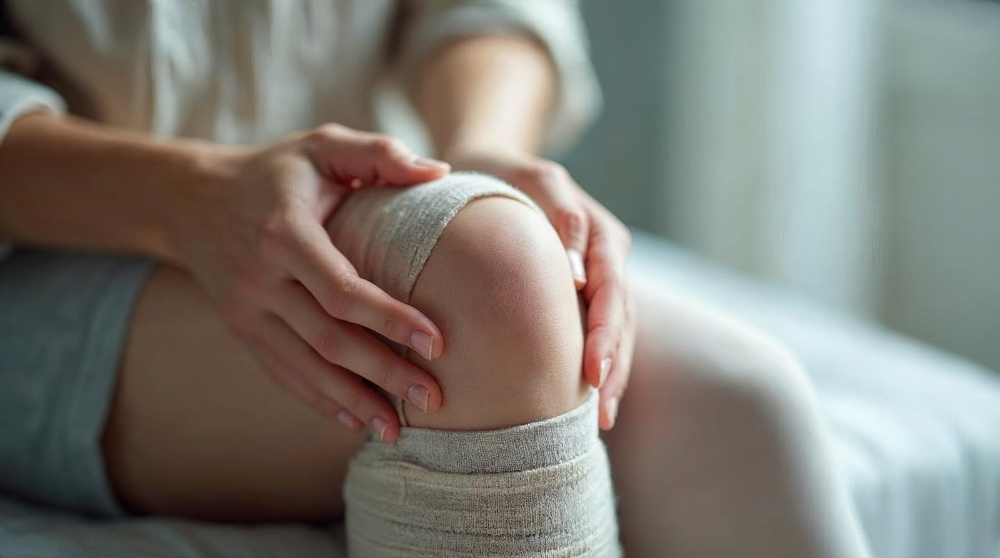
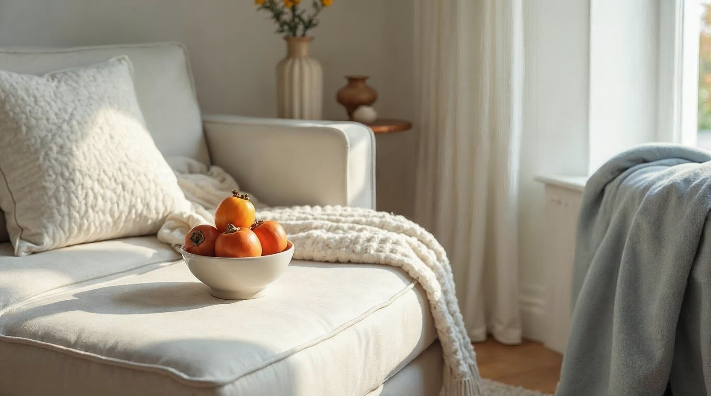

이종호 한의사 감수좋은꿈참사랑한의원 대표원장 (한의사 면허번호 19769)발행 2026-11-24 · 수정 2026-11-26
이 글의 차례
무릎이 붓고 굽힐 때 뻑뻑하면 "물이 찼다"고 표현하는 분이 많습니다. 초음파로는 관절 안에 액체가 얼마나, 어디에 있는지 화면으로 보며 설명할 수 있는 경우가 있지만, 원인은 화면만으로 정할 수 없어 진찰과 생활 이야기를 함께 듣고 판단하며, 필요하면 다른 검사를 안내합니다.
진료실에서 이런 말씀 자주 들어요. "원장님, 무릎에 물이 찼다는데 이거 큰일 난 거예요?" 먼저 안심하셔도 되는 부분부터 말씀드릴게요. 무릎에 물이 차는 건 그 자체로 병 이름이 아니라, 무릎이 어딘가에서 자극을 받았다는 몸의 신호인 경우가 많아요. 그 신호가 왜 생겼는지를 찾는 게 중요한 거예요.
왜 이런 불편이 생길 수 있나요
- 무릎을 많이 쓰거나 부딪힌 뒤 관절 안쪽 막이 자극을 받아 액체가 늘어날 수 있습니다.
- 연골이나 반월상연골이 닳거나 다친 경우 붓기가 반복되기도 합니다.
- 통풍처럼 결정이 생기는 경우나 감염처럼 서둘러 확인해야 하는 원인도 있어 열감과 발열을 꼭 봅니다.
- 계단, 쪼그려 앉기, 오래 서 있기가 겹친 날 붓기가 심해지는 분이 많습니다.
- 무릎 주변 근육이 약해져 있거나 걷는 모습이 한쪽으로 기울면 같은 무릎에 부담이 반복해서 모이기도 합니다.
- 무릎 앞쪽 주머니(점액낭)가 부으면 관절 안이 아니라 무릎뼈 앞이 볼록해지는 경우도 있어 붓는 자리를 나누어 봅니다.
생활에 따라 붓는 모습이 다릅니다.
- 예를 들어 주말에 등산을 다녀온 직장인이라면, 내려온 다음 날 아침 무릎이 빵빵하고 끝까지 굽혀지지 않는다고 말씀하시는 경우가 있습니다.
- 예를 들어 바닥에 쪼그려 앉아 텃밭이나 김장 일을 오래 한 어르신이라면, 그 다음 며칠 동안 붓기가 어떻게 변했는지 함께 확인합니다.
- 예를 들어 바닥에 앉아 아이를 돌보는 시간이 긴 육아 중인 분이라면, 앉았다 일어설 때 무릎 앞쪽 붓기를 함께 살펴봅니다.
'물이 찼다'는 건 무슨 뜻인가요?
무릎 관절 안에는 원래 관절이 부드럽게 움직이도록 돕는 액체가 조금 있어요. 문에 바르는 기름 같은 거예요. 그런데 관절 안쪽 막이 자극을 받으면 이 액체가 평소보다 많이 만들어지면서 무릎이 빵빵해지는 거죠. 그걸 흔히 물이 찼다고 말씀하시는 거예요.
여기서 두 가지를 나눠서 보셔야 해요. 관절 안에 물이 찬 것과, 무릎 주변이 부은 것은 다른 얘기예요. 앞의 것은 무릎 전체가 둥글게 차오르고 끝까지 굽히기 어려운 경우가 많고, 뒤의 것은 무릎뼈 앞이나 안쪽 한 곳만 볼록한 경우가 많거든요. 초음파는 이 둘을 나눠 보는 데 도움이 될 수 있어요.
그러니까 사실은 물 자체보다 물을 만든 원인이 더 중요해요. 많이 써서 생긴 일시적인 자극인지, 연골이나 힘줄 쪽 문제가 있는지, 서둘러 확인해야 할 원인인지를 나눠 보는 거예요.

먼저 이렇게 여쭙니다
- 언제부터 부었고, 다친 일이 있었나요?
- 무릎이 뜨겁거나 붉은가요? 열이 나지는 않나요?
- 굽히고 펼 때 끝까지 되나요, 걸리는 느낌이 있나요?
- 예전에도 같은 무릎이 부은 적이 있나요?
- 쪼그려 앉거나 무릎을 꿇는 일이 많은가요?
- 다리 전체가 붓거나 종아리가 함께 아프지는 않나요?
오시기 전에 스스로 확인해 보셔도 좋습니다.
- 양쪽 무릎을 나란히 놓고 보았을 때 한쪽이 더 둥글게 부어 보이나요?
- 손등을 양쪽 무릎에 번갈아 대었을 때 한쪽이 더 따뜻한가요?
- 뒤꿈치가 엉덩이 쪽으로 얼마나 가까이 굽혀지나요?
- 다리를 쭉 폈을 때 무릎 뒤가 바닥에 닿나요?
- 아침과 저녁 중 언제 더 붓나요?
- 체온을 재 보았을 때 열이 있나요?
왜 같은 무릎이 자꾸 부을까요? 무릎은 몸무게를 받치는 관절이라 걷는 모양이 조금만 한쪽으로 기울어도 같은 자리에 부담이 반복해서 쌓여요. 발목이나 고관절이 뻣뻣해서 무릎이 대신 일을 떠맡는 경우도 있고요. 그래서 저는 무릎만 보지 않고 서 있는 모습과 걷는 모습, 발과 엉덩이까지 같이 봐요.
무릎이 아픈 게 아니라 몸 전체가 무릎에게 일을 몰아주고 있는 경우가 꽤 있거든요.
자주 하는 오해
- 물을 빼면 끝이라고 생각하기 쉬운데, 물을 만든 원인이 그대로면 다시 차는 경우가 있어요. 그래서 원인과 생활을 함께 봐요.
- 물이 차면 전혀 걷지 말아야 한다고 여기는 분도 있지만, 열감이 없고 가벼운 붓기라면 평지를 천천히 걷는 정도는 괜찮은 경우가 많아요.
- 엑스레이에서 연골이 닳았다는 말을 들으면 이제 끝이라고 걱정하시는데, 그 자체가 곧 심한 통증을 뜻하지는 않아요.
- 부었을 때 뜨겁게 찜질하면 풀린다고 생각하기 쉽지만, 붓고 뜨거운 시기에는 찬 찜질이 더 맞는 경우가 많아요.
연골 이야기가 나오면 저는 오래된 자개장 이야기를 해요. 오래 쓴 자개장도 칠이 좀 벗겨졌을 뿐 멀쩡히 잘 쓰잖아요. 무릎도 화면에 닳은 흔적이 보인다고 다 아픈 건 아니에요. 잘 쓰면 돼요. 어떻게 덜 부담 주며 쓸지를 같이 찾는 거예요.
일상에서 먼저 해 볼 수 있는 것
- 붓기가 있는 동안 쪼그려 앉기와 무릎 꿇기 피하기
- 계단은 한 칸씩, 난간을 잡고 천천히 오르내리기
- 쉴 때는 다리를 쿠션 위에 올려 두기
- 붓고 뜨거운 느낌이 있을 때는 찬 찜질을 10~15분씩 짧게 하기
- 오래 서 있어야 하는 날은 중간에 앉아 무릎을 펴고 쉬기
- 누운 채 무릎을 편 상태에서 허벅지 앞에 힘을 5초 주었다 빼기를 통증 없는 범위에서 10번쯤 하기
- 무거운 짐은 나누어 들고 장 보는 날과 계단이 많은 길은 피해서 일정 잡기
무리한 일 뒤에 생긴 가벼운 붓기라면 이렇게 쉬면서 며칠 지켜볼 수 있습니다. 1주 가까이 지나도 붓기가 그대로이거나, 가라앉았다가 다시 붓기를 되풀이한다면 진찰을 받아 보세요.
반대로 무릎이 뜨겁고 붉으며 열이 나거나, 다친 직후 갑자기 크게 부어 체중을 싣기 어렵다면 한의원 진료를 기다리지 말고 그날 바로 의료기관이나 가까운 응급실에서 확인하세요.
붓기가 가라앉은 뒤에는 평지 걷기처럼 부담이 적은 활동부터 시간을 조금씩 늘리고, 다음 날 아침 붓기가 다시 생기지 않는지를 기준으로 삼아 보세요.
숙제는 하나만 드릴게요. 붓기가 있는 동안에는 쪼그려 앉는 자세만 피해 주세요. 무릎을 끝까지 접는 자세가 관절 안 압력을 가장 크게 올리거든요. 바닥에 앉아서 하는 일은 낮은 의자를 하나 두고 하시면 돼요. 딴 건 하던 대로 편하게 하셔도 괜찮아요.
붓기는 이렇게 재 보면 비교하기 쉬워요
눈으로만 보면 어제보다 부었는지 덜 부었는지 헷갈리기 쉬워요. 그럴 때는 집에 있는 줄자로 무릎뼈 바로 위 둘레를 재 보세요. 양쪽 무릎을 같은 자리에서 같은 자세로, 하루 중 같은 시각에 재는 게 중요해요.
- 다리를 쭉 편 채 앉아서 무릎뼈 윗부분 둘레 재기
- 아침에 일어나서 한 번, 저녁에 한 번 적기
- 그날 한 일(계단, 장보기, 쪼그려 앉기)을 한 줄 덧붙이기
이 숫자가 며칠 모이면 어떤 날 붓기가 올라가는지 함께 찾아보기 쉬워요. 몇 밀리미터 차이에 너무 마음 쓰지 마시고, 며칠 사이의 흐름을 보는 용도로만 쓰시면 돼요. 기록을 가져오시면 초음파 화면과 나란히 놓고 같이 봐요.
체중과 계단도 함께 봐요
계단을 내려갈 때 무릎이 받는 부담은 평지를 걸을 때보다 훨씬 커요. 그래서 붓기가 반복되는 분은 계단을 오를 때보다 내려갈 때 더 불편하다고 하시는 경우가 많아요. 내려갈 때는 난간을 잡고 한 칸씩, 아픈 다리를 먼저 내리고 반대쪽 다리를 따라 내리는 게 부담이 덜해요.
체중도 무릎 부담을 키우는 경우가 많아요. 그렇다고 갑자기 굶으실 필요는 없어요. 배가 고프지 않은데 습관처럼 먹는 한 끼, 늦은 밤 간식 하나만 줄여도 무릎이 받는 짐이 조금씩 가벼워지는 거예요. 저도 그 싸움은 계속하고 있어요.
허벅지 근육이 무릎을 지켜 줘요
무릎을 받쳐 주는 건 무릎 앞쪽 허벅지 근육이에요. 이 근육이 약해지면 걸을 때 충격이 관절로 바로 가서 같은 무릎에 부담이 반복해서 모이기 쉬워요. 그래서 붓기가 가라앉으면 허벅지 앞에 힘을 주었다 빼는 간단한 운동을 꾸준히 권해요.
운동은 세게 할 필요 없어요. 누워서 다리를 편 채 허벅지에 힘을 줬다 빼는 것, 의자에 앉아 무릎을 천천히 폈다 내리는 것처럼 약하게, 대신 매일 하시는 게 좋아요. 아프면 거기서 멈추시고요. 최대한 천천히, 꾸준히가 원칙이에요.
한의원에서 함께 살필 수 있는 경우
- 붓기가 오르내리며 계단에서 불편한 경우 걷는 습관과 다리 균형을 함께 살핍니다.
- 무릎 뒤가 당기거나 빵빵한 느낌이 있는 경우 무릎 뒤쪽까지 함께 확인합니다.
- 반대쪽 무릎이나 허리까지 부담이 옮겨 간 경우 몸 전체의 쓰임을 함께 봅니다.
좋은꿈참사랑한의원에서는 부은 시기와 다친 일을 듣고 진찰한 뒤, 필요하다고 판단될 때 초음파로 물 고임의 양과 위치, 무릎 앞뒤 힘줄을 좌우 비교하며 확인합니다. 그 뒤 상태에 맞춰 침·약침 등을 정하거나, 영상 검사나 다른 처치가 필요해 보이면 다른 의료기관을 안내합니다.
첫 방문에는 맥부터 짚어 보고, 부은 시기와 그 전 며칠 동안 한 일을 들은 뒤 무릎의 열감과 붓기를 손으로 확인하고 굽히고 펴는 범위를 좌우 비교합니다. 걷는 모습과 계단 동작에서 불편한 순간도 함께 봅니다.
초음파를 보게 되면 화면을 함께 보며 물이 고인 자리와 대략의 양을 설명해 드리고, 귀가 전에는 집에서 지켜볼 점과 다시 확인할 동작을 알려 드립니다.
다시 오시면 지난번 이후 붓기가 오르내린 날과 그날 한 일을 먼저 여쭙고, 처음과 같은 방법으로 굽히는 범위와 붓기를 다시 비교합니다. 필요하다고 판단될 때는 초음파도 같은 자리를 다시 보며 달라진 점을 설명드립니다.
함께 읽어 보시면 좋은 글입니다.
- 무릎이 붓고 물이 찬 것 같을 때
- 무릎 뒤가 붓고 당길 때 초음파로 살피는 것
- 초음파로 보기 어려운 뼈와 디스크
한의원에서는 어떤 방법을 함께 쓰나요?
열감이 없고 서둘러 확인할 원인이 아니라고 판단되면, 무릎 주변과 허벅지, 종아리의 굳은 곳을 살피며 침이나 약침을 쓰는 경우가 있어요. 붓기 때문에 걷는 모양이 바뀌어 반대쪽 무릎이나 허리까지 뻐근해졌다면 그 부분도 같이 봐요.
몸이 전체적으로 잘 붓고 무겁다는 분이라면 한약 상담을 함께 이야기하기도 해요. 그때는 지금 드시는 약을 먼저 확인하고, 처방받은 약은 처방한 의사와 상의 없이 줄이거나 끊지 않아요. 무엇을 할지는 이유를 먼저 설명드리고 같이 정해요.
초음파는 어떻게 보나요?
무릎 위에 젤을 바르고 작은 탐지기를 대서 화면으로 바로 보는 방법이에요. 방사선을 쓰지 않고, 무릎을 굽혔다 폈다 하면서 움직이는 모습도 볼 수 있어요. 아픈 무릎과 반대쪽 무릎을 같은 자리에서 나란히 비교하는 게 중요해요.
화면을 함께 보면서 "여기 검게 보이는 게 고인 물이에요"처럼 설명드려요. 눈으로 보시면 왜 무릎이 뻑뻑했는지 이해가 된다고 말씀하시는 분들이 많아요. 다만 화면은 판단을 돕는 도구일 뿐이고, 진찰과 말씀을 함께 종합해서 판단해요.
얼마나 지켜보며 다시 확인하나요?
몇 번 오시면 된다고 미리 정해 드리기는 어려워요. 대신 판단할 때를 정해 둬요. 붓기가 오르내린 날과 굽히는 범위를 기록해 오시면 그걸 보고 계속 지켜볼지, 방법을 바꿀지, 다른 검사가 필요한지를 함께 정해요.
붓기가 가라앉았다고 다 끝난 건 아니에요. 다시 붓지 않게 무릎을 쓰는 습관과 허벅지 힘까지 챙겨야 마무리가 되는 거예요.

초음파로 확인하기 어려운 것
연골과 반월상연골 전체, 뼈 속 상태는 초음파로 보기 어려워, 이런 부분이 의심되면 X선이나 MRI 같은 다른 검사를 안내합니다.
또 화면으로 물이 고인 것은 볼 수 있어도 그 물이 왜 생겼는지까지 알려 주지는 않습니다. 열감이나 반복되는 붓기가 있으면 혈액 검사나 관절액 검사가 가능한 의료기관 확인이 필요할 수 있습니다.

이렇게 기록해 오시면 상담이 쉬워집니다
- 부은 날짜와 그 전날 한 일(등산, 쪼그려 앉기 등)
- 무릎을 굽힐 수 있는 정도(양반다리 가능 여부 등)
- 다른 의료기관 영상 검사 결과지나 주사 치료 이력
- 무릎이 붓는 날과 가라앉는 날의 차이(활동, 날씨 등)
- 같은 거리에서 찍은 양쪽 무릎 사진(아침과 저녁)
- 체온을 재 보았다면 그 숫자와 잰 시각
이런 증상은 먼저 확인이 필요합니다
- 무릎이 뜨겁고 붉으며 열이 나는 경우
- 다친 뒤 갑자기 붓고 체중을 실을 수 없는 경우
이런 신호가 있으면 한의원보다 가까운 병원이나 응급실을 먼저 찾으세요.
무릎이 부으면 걱정부터 앞서시죠. 그래도 대부분은 원인을 차근차근 찾으면 어떻게 관리할지가 보여요. 궁금한 건 화면을 같이 보면서 편하게 물어보세요.

여쭙는 것
- 언제부터 부었고, 다친 일이 있었나요?
- 무릎이 뜨겁거나 붉은가요? 열이 나지는 않나요?
- 굽히고 펼 때 끝까지 되나요, 걸리는 느낌이 있나요?
생활에서 해 볼 것
- 붓기가 있는 동안 쪼그려 앉기와 무릎 꿇기 피하기
- 계단은 한 칸씩, 난간을 잡고 천천히 오르내리기
- 쉴 때는 다리를 쿠션 위에 올려 두기
한의원에서 함께 살필 것
- 붓기가 오르내리며 계단에서 불편한 경우 걷는 습관과 다리 균형을 함께 살핍니다.
- 무릎 뒤가 당기거나 빵빵한 느낌이 있는 경우 무릎 뒤쪽까지 함께 확인합니다.
- 반대쪽 무릎이나 허리까지 부담이 옮겨 간 경우 몸 전체의 쓰임을 함께 봅니다.
먼저 확인이 필요한 신호
- 무릎이 뜨겁고 붉으며 열이 나는 경우
- 다친 뒤 갑자기 붓고 체중을 실을 수 없는 경우
한눈에 보는 표
| 구분 | 핵심 |
|---|---|
| 여쭙는 것 | 언제부터 부었고, 다친 일이 있었나요? 무릎이 뜨겁거나 붉은가요? 열이 나지는 않나요? |
| 생활에서 해 볼 것 | 붓기가 있는 동안 쪼그려 앉기와 무릎 꿇기 피하기 계단은 한 칸씩, 난간을 잡고 천천히 오르내리기 |
| 한의원에서 함께 살필 것 | 붓기가 오르내리며 계단에서 불편한 경우 걷는 습관과 다리 균형을 함께 살핍니다. 무릎 뒤가 당기거나 빵빵한 느낌이 있는 경우 무릎 뒤쪽까지 함께 확인합니다. |
| 먼저 확인이 필요한 신호 | 무릎이 뜨겁고 붉으며 열이 나는 경우 다친 뒤 갑자기 붓고 체중을 실을 수 없는 경우 |
자주 묻는 질문
초음파로 물이 찬 것이 보이나요?
관절 안의 물 고임과 위치를 확인할 수 있는 경우가 있습니다.
물이 보이면 꼭 빼야 하나요?
원인과 양, 증상에 따라 다릅니다. 필요하다고 판단되면 다른 의료기관 진료를 안내합니다.
모든 환자가 초음파를 받나요?
아니요. 말씀과 진찰을 바탕으로 필요하다고 판단될 때만 합니다.
무릎이 부었을 때 걸어도 되나요?
평지를 천천히 걷는 정도는 괜찮은 경우가 많지만 열감이나 통증이 심하면 쉬고 먼저 확인받으세요. 상태를 보고 안내합니다.
초음파를 볼 때 준비할 것이 있나요?
무릎 위까지 쉽게 걷어 올릴 수 있는 바지를 입고 오시면 편합니다. 검사 뒤 젤은 닦아 드립니다.
좋은꿈참사랑한의원은 재진 때 지난번 이야기부터 이어서 여쭙니다. 진료시간과 예약은 오시는 길에서 확인하세요.
어디서 상담받을 수 있나요?
좋은꿈참사랑한의원은 서울 동작구 만양로2길 2 신성빌딩 3층·5층(서울 동작구 상도동, 7호선 상도역 3번 출구 근처)에 있습니다. 한의사 3명(이종호 대표원장, 조영기 수석진료원장, 정원영 진료원장)이 진료합니다. 진료시간은 평일 09:30~20:00(점심 13:00~14:00), 토·일·공휴일 09:30~15:00이며, 방문 전 전화로 확인을 권합니다. 예약은 네이버 예약, 카카오톡 상담, 전화 02-815-7510로 받습니다.
이 글은 일반적인 건강 정보이며 개인의 진단이나 치료를 대신하지 않습니다. 증상이 있거나 복용 중인 약이 있다면 진료를 통해 확인하세요. 치료 효과는 개인마다 다를 수 있습니다.
작성 기준: 일반적으로 알려져 있는 건강 정보를 참고해 정리했습니다(대표원장 감수). 증상 기록은 1~2주 동안 하루 1회, 비슷한 시간에 적어 오시면 지난 상태와 비교하기 쉽습니다.